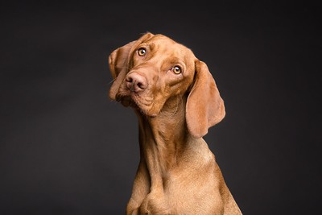
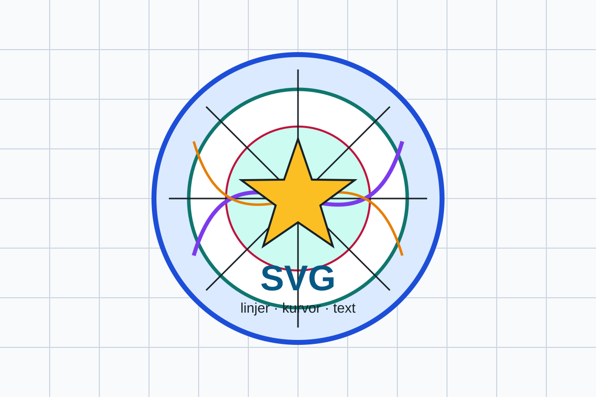

Modul 6
Kap 6.1 - Bildformat på webben
Rätt bildformat gör sidan tydligare, snabbare och lättare att underhålla.
Mål
- Känna igen vanliga bildformat på webben.
- Välja format efter bildens innehåll och användning.
- Förstå skillnaden mellan pixelbilder och vektorbilder.
Pixelbilder och vektorbilder
JPEG, PNG, WebP och AVIF är pixelbilder. De består av många små bildpunkter. SVG är vektorbaserat och passar bra för ikoner, logotyper och enkla illustrationer som ska kunna skalas utan att bli suddiga.
Pixelbilder kallas också rasterbilder. De fungerar bra för fotografier, men om du zoomar in tillräckligt långt ser du pixlarna. Vektorbilder beskriver former med linjer, punkter och ytor. Därför kan en SVG-logotyp skalas upp utan att bli suddig.
Zooma i en pixelbild
Zooma med reglaget och dra sedan bilden med mus eller touch. Vid hög förstoring syns de enskilda pixlarna.

Zooma i en vektorbild
Zooma med reglaget och dra sedan bilden till en tunn linje, kurva eller bokstav. Kanterna fortsätter i princip att vara skarpa.

Vanliga format
jpgellerjpegpassar ofta för fotografier.pngpassar när bilden behöver transparens eller skarpa detaljer.svgpassar för logotyper, ikoner och enkel grafik.webpochavifkan ge mindre filstorlek med bra kvalitet.
Formatens styrkor
JPEG/JPG
Passar fotografier och stora bilder med många färger. JPEG komprimerar ofta bra, men använder förstörande komprimering. Om du komprimerar för hårt kan bilden få synliga artefakter och detaljer kan försvinna.
PNG
Passar grafik med skarpa kanter, skärmbilder och bilder som behöver transparens. PNG kan bli tungt för stora fotografier, särskilt jämfört med JPEG, WebP eller AVIF.
WebP
Ett modernt format som ofta ger mindre filer än JPEG och PNG. WebP kan användas för fotografier, transparens och animationer. Det är ofta ett bra standardval när webbläsarstöd och verktyg fungerar i projektet.
AVIF
Ett nyare format som kan ge mycket små filer med hög kvalitet, särskilt för fotografier. AVIF kan vara långsammare att skapa och alla arbetsflöden hanterar det inte lika smidigt, så testa alltid resultatet.
SVG
Passar logotyper, ikoner, diagram och enkel grafik. SVG är vektorbaserat och kan även skrivas direkt som kod. Det passar däremot inte för vanliga fotografier.
GIF
GIF användes tidigare mycket för enkla animationer. I nya projekt är det sällan bästa valet. WebP, video eller andra moderna format ger ofta bättre kvalitet och mindre filer.
WebP eller AVIF idag?
För rasterbilder som publiceras på webben är WebP och AVIF normalt att föredra framför äldre format när kvaliteten blir bra och projektets verktyg stöder formatet. AVIF kan ofta ge mindre filer vid jämförbar kvalitet, medan WebP har ett moget och smidigt stöd i många arbetsflöden.
I den här kursen använder vi WebP som standard för rasterbilder. Det ger en tydlig gemensam arbetsgång. I mer avancerade projekt kan AVIF användas när du har jämfört kvalitet, filstorlek, kodningstid och önskat webbläsarstöd.
Läs mer: Crystallize: AVIF vs. WebP och Elementor: WebP vs. AVIF.
Komprimering och transparens
Komprimering betyder att filen görs mindre. Förstörande komprimering (lossy), till exempel i JPEG, tar bort bildinformation för att minska filstorleken. Förlustfri komprimering (lossless) försöker minska filen utan att kasta bort bildinformation på samma sätt. I praktiken behöver du ofta jämföra kvalitet och filstorlek i ett verktyg.
Transparens betyder att delar av bilden kan vara genomskinliga. Det är viktigt för till exempel logotyper, ikoner och UI-grafik som ska ligga ovanpå olika bakgrunder. JPEG stöder inte transparens, men PNG, WebP, AVIF och SVG kan göra det.
Jämförelse
| Format | Typ | Styrka | Transparens | Vanlig användning |
|---|---|---|---|---|
| JPEG/JPG | Raster | Bra för fotografier | Nej | Foton, stora bildytor |
| PNG | Raster | Skarpa detaljer och transparens | Ja | Skärmbilder, enkel grafik, logotyper |
| WebP | Raster | Små filer med bra kvalitet | Ja | Fotografier, grafik, animationer |
| AVIF | Raster | Mycket effektiv komprimering | Ja | Fotografier där låg filstorlek är viktig |
| SVG | Vektor | Skalbar utan pixlighet | Ja | Ikoner, logotyper, diagram |
Testa format själv
För att förstå skillnaden behöver du jämföra samma bild i flera format. Använd till exempel Squoosh och testa JPEG, WebP och AVIF med samma målstorlek. Titta både på filstorlek och bildkvalitet. En himmel, hudton eller jämn bakgrund kan avslöja skillnader tydligare än en mycket rörig bild.
Kontrollera också webbläsarstöd när du använder nyare format. Can I Use visar vilka webbläsare som stöder olika format.
Format är ett val
Det finns inget format som alltid är bäst. En produktbild, en ikon och ett stort bakgrundsfoto har olika behov. Välj format efter kvalitet, filstorlek, transparens, webbläsarstöd och hur bilden ska användas.
Övningar
Förbered arbetet
- Skapa en mapp som heter
kap 6-1i din mappWebbutveckling 1. - Öppna bara mappen
kap 6-1i Visual Studio Code via Arkiv → Öppna mapp. - Skapa
ovn6-1.html. Gör båda övningarna i samma fil, i varsin del av sidan. - Skriv CSS i ett
<style>-element inuti<head>. Om du skapar fler än en HTML-sida ska du i stället använda en extern CSS-fil, till exempelstyle.css, som du länkar från varje sida. - Använd nedladdningslänkarna i övningarna. Om en fil öppnas i webbläsaren, välj Spara bild som eller spelarens nedladdningsalternativ. Behåll filnamnen och spara filerna i den undermapp som anges.
Övning 1: Jämför ett foto i olika format
Undersök hur filformatet påverkar en och samma bild.
- Ladda ner kursens dog.jpg – brun hund mot mörk bakgrund. Spara den i undermappen
bilder. Originalet är 400 × 267 pixlar. - Öppna bilden i bildverktyget som länkas i kapitlet. Exportera en PNG-version som
hund.pngoch en WebP-version somhund.webp. Behåll 400 × 267 pixlar i båda versionerna. Att byta filändelse är inte en konvertering. - Skapa en fullständig HTML-sida med språk, sidtitel och viewport-inställning. Visa de tre bilderna i varsin
figuremed beskrivande alt-text och bildtext. Använd sökvägarnabilder/dog.jpg,bilder/hund.pngochbilder/hund.webp. - Visa bilderna lika stora med CSS, högst 400 pixlar breda, och använd
max-width: 100%ochheight: auto. - Skapa en HTML-tabell med filnamn, format, dimensioner och faktisk filstorlek i kB. Jämför pälsens detaljer och bakgrunden och skriv vilket format du väljer för fotot och varför.

Kontrollera och förklara: Alla tre filer ska visa samma motiv med samma dimensioner. Utgå från dina mätningar när du jämför filstorlek; ett byte till WebP garanterar inte att just din export blir mindre.
Övning 2: Jämför pixelbild och vektorbild
Fortsätt i samma HTML-fil och undersök vilka bilder som passar att förstora.
- Ladda ner svg-zoom-demo.svg – geometriska former och text till
bilder. Visa den medsrc="bilder/svg-zoom-demo.svg"och en alt-text som beskriver innehållet. - Lägg SVG-bilden och hundfotot från övning 1 i en ny jämförelsesektion. Ge dem tydliga bildtexter som anger vektorbild respektive pixelbild.
- Öppna båda bildfilerna i webbläsaren och förstora kraftigt. Jämför kanterna på SVG-bildens former med detaljerna i hundfotot.
- Skriv tre korta rekommendationer på sidan: ett format för ett fotografi, ett för en skalbar logotyp och ett för en pixelbild som behöver transparens. Motivera varje val med kapitlets jämförelse.
- Förklara varför du inte får en vektorbild genom att döpa om
dog.jpgtilldog.svg, och varför JPEG inte passar när bakgrunden måste vara genomskinlig.

Kontrollera och förklara: Kontrollera att båda bildfilerna visas och att du kan förklara skillnaden mellan pixlar och former. Nämn även när AVIF kan vara ett alternativ till WebP.